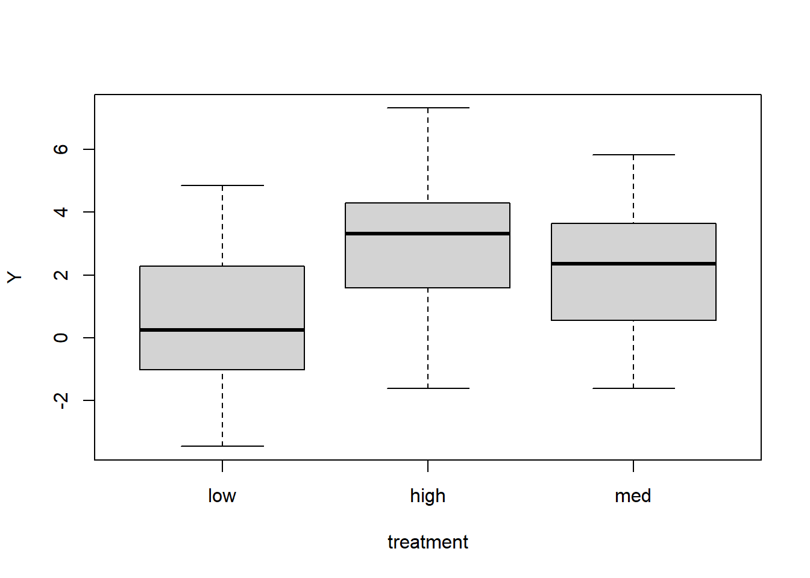

library(mvtnorm)
# Specify the sample size
N <- 1000
# Specify the correlation between altitude and temperature
rho <- -0.4
# This line of code creates two correlated variables
X <- rmvnorm(N, mean = c(0, 0), sigma = matrix(c(1, rho, rho, 1), 2, 2))
# Extract the first and second columns to vectors named temp and alt and plot
temp <- X[, 1]
alt <- X[, 2]
plot(temp, alt)Interpretación de Regresiones Lineales
La interpretación de los coeficientes en modelos lineales (generalizados) es más sutil de lo que puedes darte cuenta, y tiene consecuencias en cómo probamos hipótesis y reportamos hallazgos. Comenzaremos hablando de las interpretaciones marginales vs. condicionales de los parámetros del modelo.

En este ejemplo, modelamos la altura de las plantas en función de la altitud y la temperatura. Estas variables están correlacionadas de manera negativa: hace más frío a mayor altitud. Comenzamos simulando algunos datos para reflejar esto.
Ahora podemos simular algunos datos de altura de las plantas. Aquí decimos que la altura media de las plantas es 2 (cuando todas las demás variables son 0). A medida que la temperatura aumenta en una unidad (manteniendo la altitud constante), la media de la altura aumentará en 1 unidad (beta[2] = 1), y de manera similar, a medida que aumentas la altitud en 1 unidad (manteniendo la temperatura constante), la media de la altura disminuirá en 1 (beta[3] = -1). La altura sigue una distribución normal con esta media y una desviación estándar de 2.
beta <- c(2, 1, -1)
mu <- beta[1] + beta[2] * temp + beta[3] * alt
height <- rnorm(N, mu, sd = 2)Si utilizamos un modelo lineal para encontrar los coeficientes, obtenemos lo que esperamos, estimaciones muy cercanas a los valores reales.
lm_both <- lm(height ~ temp + alt)
data.frame(estimated = round(lm_both$coefficients, 2), true = beta) estimated true
(Intercept) 1.99 2
temp 0.94 1
alt -0.99 -1La interpretación de estos coeficientes es que si mantienes todo lo demás en el modelo constante (es decir, la temperatura) y agregas 1 a la altitud, entonces la altura media estimada disminuirá en 1.09. Ten en cuenta que el coeficiente depende de las unidades en las que se mide la altitud. Si la altitud se mide en metros, entonces el coeficiente te dice qué sucede cuando subes 1 metro.
La intersección es el valor predicho cuando todas las demás variables se establecen en 0, lo cual a veces tiene sentido (aquí sería la altura de las plantas a nivel del mar y a 0 grados de temperatura). Otras veces, 0 no es un valor significativo, y si deseas interpretar la intersección, podría tener sentido reescalar tus otras variables para que su media sea 0. Si haces esto, entonces la intersección es el valor predicho cuando todas las demás variables están en su nivel medio.
¿Y si ahora tuviéramos un modelo solo con la temperatura?
lm1 <- lm(height ~ temp)
lm1$coefficients(Intercept) temp
1.916260 1.343841 El coeficiente de temperatura ahora es 1.38, ¿qué está pasando? La altitud es un predictor importante de la altura de las plantas, y parte de la información sobre la altitud está contenida en la temperatura (recuerda que están correlacionadas, por lo que a medida que la altitud aumenta, la temperatura disminuye). El modelo tiene en cuenta esto cambiando el efecto de la temperatura para tener en cuenta la información que contiene sobre la altitud. Observa que el coeficiente de temperatura está incorrecto en aproximadamente 0.4, que es la cantidad de correlación entre las variables.
Nota: Cuando los estadísticos hablan de esto, usan las palabras condicional y marginal. Condicional es el efecto de una variable cuando las demás se mantienen constantes (como en lm_both), mientras que marginal es el efecto global (como en lm1). Nota: Si utilizas el código anterior para simular tus propios conjuntos de datos, obtendrás valores ligeramente diferentes para los coeficientes.
Pruebas de hipótesis
Esta distinción tiene muchas consecuencias tanto para el modelado como para las pruebas de hipótesis. Generemos algunos datos en los que la altitud predice la altura, y la temperatura no tiene (información adicional), y luego probemos la temperatura.
mu <- 2 - 1 * alt
height <- rnorm(N, mu, sd = 2)
mod_temp <- lm(height ~ temp)
summary(mod_temp)
Call:
lm(formula = height ~ temp)
Residuals:
Min 1Q Median 3Q Max
-6.4168 -1.3871 0.0002 1.3837 6.5856
Coefficients:
Estimate Std. Error t value Pr(>|t|)
(Intercept) 1.90153 0.07036 27.025 < 2e-16 ***
temp 0.37797 0.06828 5.535 3.97e-08 ***
---
Signif. codes: 0 '***' 0.001 '**' 0.01 '*' 0.05 '.' 0.1 ' ' 1
Residual standard error: 2.225 on 998 degrees of freedom
Multiple R-squared: 0.02979, Adjusted R-squared: 0.02881
F-statistic: 30.64 on 1 and 998 DF, p-value: 3.974e-08anova(mod_temp)Analysis of Variance Table
Response: height
Df Sum Sq Mean Sq F value Pr(>F)
temp 1 151.7 151.680 30.638 3.974e-08 ***
Residuals 998 4940.8 4.951
---
Signif. codes: 0 '***' 0.001 '**' 0.01 '*' 0.05 '.' 0.1 ' ' 1La salida de este modelo nos está indicando que hay un efecto de la temperatura, aunque técnicamente no lo haya. No nos está dando información falsa si entendemos cómo interpretar los resultados del modelo. Debido a que la temperatura está correlacionada con la altitud, y hay un efecto de la altitud, cuando la altitud no está en el modelo, el modelo nos dice en general que hay un efecto de la temperatura que aumenta la altura en 0.45 (recuerda que la correlación fue 0.4). Si nuestra hipótesis es “¿La altura de las plantas cambia con la temperatura?”, la respuesta es sí, a mayor temperatura, más altas son las plantas.
Pero, ¿qué pasa con la altitud? Sabemos que el efecto de la temperatura que observamos se debe a que está correlacionado con la altitud, la temperatura no predice directamente la altura. Si queremos saber si hay un efecto de la temperatura después de controlar la altitud (manteniendo la altitud constante, es decir, condicional), entonces ajustamos el modelo con la altitud y luego probamos la temperatura.
mod_temp_alt <- lm(height ~ alt + temp)
summary(mod_temp_alt)
Call:
lm(formula = height ~ alt + temp)
Residuals:
Min 1Q Median 3Q Max
-5.7545 -1.3827 0.0116 1.4017 6.6308
Coefficients:
Estimate Std. Error t value Pr(>|t|)
(Intercept) 1.97947 0.06388 30.989 <2e-16 ***
alt -1.05451 0.07075 -14.904 <2e-16 ***
temp -0.04747 0.06806 -0.697 0.486
---
Signif. codes: 0 '***' 0.001 '**' 0.01 '*' 0.05 '.' 0.1 ' ' 1
Residual standard error: 2.013 on 997 degrees of freedom
Multiple R-squared: 0.2066, Adjusted R-squared: 0.205
F-statistic: 129.8 on 2 and 997 DF, p-value: < 2.2e-16anova(mod_temp_alt)Analysis of Variance Table
Response: height
Df Sum Sq Mean Sq F value Pr(>F)
alt 1 1049.9 1049.95 259.0719 <2e-16 ***
temp 1 2.0 1.97 0.4864 0.4857
Residuals 997 4040.6 4.05
---
Signif. codes: 0 '***' 0.001 '**' 0.01 '*' 0.05 '.' 0.1 ' ' 1El p-valor es aproximadamente 0.95, por lo que no tenemos evidencia de un efecto de la temperatura después de controlar la altitud.
Nota: La distinción entre interpretaciones condicionales y marginales también es válida para modelos lineales generalizados y modelos mixtos.
Covariables categóricas
Cuando tenemos covariables categóricas (por ejemplo, tratamiento), hay varias formas de codificar el modelo, lo que dará diferentes interpretaciones para los coeficientes. Simulemos 120 puntos de datos con 40 en cada uno de los tres niveles de un tratamiento categórico.
N <- 120
# The effect of treatment
trt.n <- rep(c(-1, 0, 1), N / 3)
mu <- 2 + 1 * trt.n
# Labels for the treatment
treatment <- factor(rep(c("low", "med", "high"), N / 3)) # group labels
# Create, Y, a normally distributed response variable and plot against treatment
Y <- rnorm(N, mu, sd = 2)
boxplot(Y ~ treatment)Si introducimos el tratamiento como una covariable de la forma habitual, el modelo elegirá un tratamiento de referencia (aquí será “high” ya que los niveles se ordenan alfabéticamente), de modo que la intersección será la media de este grupo de referencia. Los demás coeficientes serán las diferencias entre los otros grupos y el grupo de referencia.
cat_lm <- lm(Y ~ treatment)
summary(cat_lm)
Call:
lm(formula = Y ~ treatment)
Residuals:
Min 1Q Median 3Q Max
-5.1663 -1.3331 -0.2593 1.5723 4.2109
Coefficients:
Estimate Std. Error t value Pr(>|t|)
(Intercept) 3.4683 0.3273 10.595 < 2e-16 ***
treatmentlow -2.8122 0.4629 -6.075 1.59e-08 ***
treatmentmed -1.0622 0.4629 -2.294 0.0235 *
---
Signif. codes: 0 '***' 0.001 '**' 0.01 '*' 0.05 '.' 0.1 ' ' 1
Residual standard error: 2.07 on 117 degrees of freedom
Multiple R-squared: 0.2434, Adjusted R-squared: 0.2305
F-statistic: 18.82 on 2 and 117 DF, p-value: 8.201e-08Entonces, el grupo “high” tiene una media de 2.65, y la diferencia entre las medias del grupo “low” y el grupo “high” es de -0.66, y la diferencia entre el grupo “med” y el grupo “high” es de -1.48. Si deseas tener otro grupo como grupo de referencia, puedes usar relevel para recodificar tu factor de tratamiento.
treatment <- relevel(treatment, ref = "low")
cat_lm <- lm(Y ~ treatment)
summary(cat_lm)
Call:
lm(formula = Y ~ treatment)
Residuals:
Min 1Q Median 3Q Max
-5.1663 -1.3331 -0.2593 1.5723 4.2109
Coefficients:
Estimate Std. Error t value Pr(>|t|)
(Intercept) 0.6561 0.3273 2.004 0.047349 *
treatmenthigh 2.8122 0.4629 6.075 1.59e-08 ***
treatmentmed 1.7500 0.4629 3.780 0.000248 ***
---
Signif. codes: 0 '***' 0.001 '**' 0.01 '*' 0.05 '.' 0.1 ' ' 1
Residual standard error: 2.07 on 117 degrees of freedom
Multiple R-squared: 0.2434, Adjusted R-squared: 0.2305
F-statistic: 18.82 on 2 and 117 DF, p-value: 8.201e-08boxplot(Y ~ treatment)
Ahora la intersección es la media del grupo “low”, y todos los demás coeficientes son las diferencias entre el grupo “low” y los demás. Otra cosa que puedes hacer es poner -1 en el modelo para eliminar la intersección y tener solo las medias de cada grupo como coeficientes.
cat_lm <- lm(Y ~ treatment - 1)
summary(cat_lm)
Call:
lm(formula = Y ~ treatment - 1)
Residuals:
Min 1Q Median 3Q Max
-5.1663 -1.3331 -0.2593 1.5723 4.2109
Coefficients:
Estimate Std. Error t value Pr(>|t|)
treatmentlow 0.6561 0.3273 2.004 0.0473 *
treatmenthigh 3.4683 0.3273 10.595 < 2e-16 ***
treatmentmed 2.4061 0.3273 7.350 2.91e-11 ***
---
Signif. codes: 0 '***' 0.001 '**' 0.01 '*' 0.05 '.' 0.1 ' ' 1
Residual standard error: 2.07 on 117 degrees of freedom
Multiple R-squared: 0.5928, Adjusted R-squared: 0.5823
F-statistic: 56.77 on 3 and 117 DF, p-value: < 2.2e-16Ahora, los tres coeficientes son las medias de los grupos.
Contraste de los coeficientes También podemos ver los contrastes; estos son las diferencias entre todos los pares de grupos. Carga el paquete multcomp y utiliza glht (hipótesis lineales generales) para examinar todas las diferencias de pares.
library(multcomp)
cont <- glht(cat_lm, linfct = mcp(treatment = "Tukey"))
summary(cont)
Simultaneous Tests for General Linear Hypotheses
Multiple Comparisons of Means: Tukey Contrasts
Fit: lm(formula = Y ~ treatment - 1)
Linear Hypotheses:
Estimate Std. Error t value Pr(>|t|)
high - low == 0 2.8122 0.4629 6.075 <0.001 ***
med - low == 0 1.7500 0.4629 3.780 <0.001 ***
med - high == 0 -1.0622 0.4629 -2.294 0.0606 .
---
Signif. codes: 0 '***' 0.001 '**' 0.01 '*' 0.05 '.' 0.1 ' ' 1
(Adjusted p values reported -- single-step method)Cada línea de esta salida compara dos grupos entre sí. La primera línea, por ejemplo, compara el grupo “high” con el grupo “low”. Por lo tanto, la diferencia entre las medias de los grupos “high” y “low” es de 1.84. Los valores de p y los intervalos de confianza proporcionados por glht controlan las pruebas múltiples, lo cual es útil. Si deseas ver los intervalos de confianza para las diferencias entre los grupos.
confint(cont)
Simultaneous Confidence Intervals
Multiple Comparisons of Means: Tukey Contrasts
Fit: lm(formula = Y ~ treatment - 1)
Quantile = 2.3737
95% family-wise confidence level
Linear Hypotheses:
Estimate lwr upr
high - low == 0 2.81222 1.71334 3.91110
med - low == 0 1.75002 0.65114 2.84890
med - high == 0 -1.06220 -2.16108 0.03668Nota: En un modelo con múltiples covariables, las mismas reglas siguen aplicándose en cuanto a las interpretaciones condicionales y marginales de los coeficientes.
Interpretación de los coeficientes en modelos lineales generalizados En los modelos lineales, la interpretación de los parámetros del modelo es lineal, como se discutió anteriormente. Para los modelos lineales generalizados, ahora lee la página de tutoriales sobre la interpretación de los coeficientes en esos modelos.
Autor: Gordana Popovic Año: 2016 Última actualización: Nov. 2023